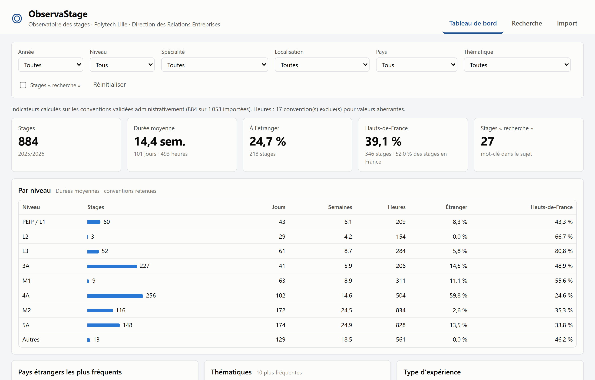

ObservaStage
Valoriser et suivre les données de stages de Polytech Lille
Augustin Mélon · ISIA5 · Projet ingénieur 2026-2027
Soutenance intermédiaire · 21 octobre 2026
Référente : Dorothée Bernard (Direction des Relations Entreprises)
Tutrice école : Marie-Éléonore Kessaci · Expert technique : Bastien Cazaux
Contexte
Des données de stages riches… mais inexploitables
- La Direction des Relations Entreprises gère les conventions de stage de toutes les formations (PEIP, licences, masters, cycle ingénieur)
- Depuis 2025-2026, tout passe par EsupStage, l'outil national de gestion des conventions
- EsupStage gère une convention… mais n'analyse pas l'ensemble : la seule sortie est un fichier Excel de 71 colonnes par année
- Bénéficiaires potentiels : direction (indicateurs, contrôles), enseignants (thématiques), futurs stagiaires (structures d'accueil)
80 %
des questions posées à la DRE sur les stages restent sans réponse
30 min
de traitement manuel pour chaque extraction, pour les autres
1 053
conventions en 2025-2026 · une seule personne pour les gérer
ObservaStage · Soutenance intermédiaire2
Le besoin
Comprendre le besoin : des questions aux règles
| Question posée à la DRE | Ce qu'il fallait préciser | Règle validée |
|---|
| « Combien de stages ? » | Toutes les conventions ? | Validées ; seuls les doublons non validés sont retirés |
| « Combien à l'étranger ? » | Pays du siège ou du lieu du stage ? | Pays du service d'accueil |
| « Quelle part en Hauts-de-France ? » | Aucune colonne région | Département du code postal |
| « Quelle durée moyenne ? » | Dates ou heures déclarées ? | En jours, semaines et heures |
| « Combien dans la recherche ? » | Aucune colonne dédiée | Mots-clés dans le sujet |
Chaque règle est chiffrée sur les données réelles, puis présentée à l'utilisatrice avec les options possibles avant d'être retenue.
Une démarche avec l'utilisatrice
- 3 réunions avec la DRE : cadrage (28/09), règles métier (12/10), validation (19/10)
- Chaque réunion préparée (questions, options chiffrées) et suivie d'un compte rendu
- 14 règles explicitées et validées, périmètre priorisé avec elle
- Critères de validation du prototype validés le 19/10
ObservaStage · Soutenance intermédiaire3
Objectif
Un outil pour importer, structurer et exploiter
Importerlire le fichier EsupStage de l'année, associer les colonnes, pré-traiter (contrôles, anomalies)
›
Structurerune base de données historisée, année après année
›
Exploiterindicateurs, recherche, export
Utilisatrice de la V1
Dorothée Bernard (DRE), non informaticienne. Elle doit pouvoir importer chaque année sans aide.
Plus tard : enseignants, étudiants (avec des droits adaptés).
Une chaîne qui s'adapte
Le format de l'extraction peut changer d'une année à l'autre : colonnes renommées, déplacées, ajoutées, supprimées.
→ Tout s'ajuste par paramétrage (colonnes, règles métier, référentiels), sans modifier le code.
ObservaStage · Soutenance intermédiaire4
Les données
Pourquoi un import « naïf » ne suffit pas
Des intitulés trompeurs
Tirets, apostrophes et casse varient dans un même fichier :
Service d'accueil - Commune Service d’accueil – Adresse
« Code NAF » contient… un libellé : Ingénierie, études techniques
Des informations à dériver
Pas de colonne niveau, région, secteur ou recherche. Le niveau et la spécialité sont fusionnés :
2an Ing Polytech Génie civil → 4A · Génie civil
Particularité de la base : pas de SIRET pour les structures étrangères (21 %), c'est normal. Il faut une autre clé pour les rapprocher.
Une qualité hétérogène
- 18 % de cellules vides, 7 colonnes entièrement vides
- Valeurs aberrantes : jusqu'à 175 h par semaine
- Type d'expérience (CDD, intérim) : seulement en texte libre
Aucun historique
2025-2026 est la première année d'EsupStage : impossible de tester l'évolution des colonnes sur des données réelles.
→ fichiers de test modifiés à partir de la base réelle
ObservaStage · Soutenance intermédiaire · base anonymisée 2025-2026 : 1 053 conventions, 71 colonnes5
Cahier des charges
Périmètre de la V1, priorisé avec la DRE
| Indispensable | Import avec mapping configurable et profil réutilisable · contrôles et rapport d'anomalies · indicateurs (durée en jours, semaines et heures ; France / étranger ; Hauts-de-France ; par niveau, spécialité, année) · recherche multicritère · export CSV et XLS |
| Souhaitable | Historique multi-années · recherche plein texte · graphiques · rapprochement des structures sans SIRET |
| Bonus | Indicateurs « recherche » et « secteur » · type d'expérience (CDD, intérim, bénévolat) |
| Hors V1 | Gratification · gestion de plusieurs profils |
Critères de validation (validés le 19/10)
- Import autonome, adapté aux colonnes modifiées, sans doublon au réimport
- Indicateurs identiques aux chiffres de référence
- Recherche par année, niveau, spécialité, lieu, thématique
- Export CSV et XLS lisible dans Excel
Contraintes : technologies imposées par l'école (PHP, JavaScript, PostgreSQL) · RGPD (données nominatives en production) · hébergement école.
Livrables : prototype, architecture, modèle de données, stratégie d'import, documentation, guide utilisateur.
ObservaStage · Soutenance intermédiaire · périmètre validé le 12/10, critères le 19/106
Mise en œuvre
Une chaîne de la donnée, adaptable de bout en bout
Import
Lecture.xls · .xlsx · .csv, tout en texte
›
Mappingconfigurable, profils en base
›
Pré-traitementconversions, anomalies
›
PostgreSQLrègles métier paramétrées
›
API JSONPHP
›
InterfaceHTML / JavaScript
Technologies imposées par l'école (standard des applications de Polytech), validées avec l'expert technique le 29/09.
Mapping : seules les différences sont à traiter
1Profil connu : mêmes colonnes qu'un import précédent → appliqué
2Colonne déjà rencontrée : décision passée reprise
3Alias connus, après normalisation (accents, casse, ponctuation)
4Similarité → proposition « à vérifier »
L'utilisatrice valide en voyant des valeurs d'exemple ; son choix devient un profil réutilisable.

Fichier de test aux colonnes modifiées : 34 reconnues, 2 à vérifier, 3 nouvelles sur 69
ObservaStage · Soutenance intermédiaire · architecture détaillée en annexe7
Fiabilité
Des indicateurs fiables, des données protégées
Règles explicites, validées
- Conventions validées ; doublons non validés retirés (décidé le 19/10)
- Étranger = pays du service d'accueil
- Hauts-de-France = départements 02, 59, 60, 62, 80
- Valeurs aberrantes signalées et exclues, jamais corrigées
Vérification croisée
Un script Python indépendant recalcule les indicateurs à partir du fichier brut, puis les compare à l'application.
48 / 48
indicateurs identiques
ex. 884 stages validés · 14,4 semaines en moyenne · 24,7 % à l'étranger
RGPD dès la conception
- Développement sur une base anonymisée, même code en production
- Colonnes ignorées non stockées, fichier supprimé après import
- Adresses, téléphones, e-mails personnels : non stockés
- Noms accessibles à la seule utilisatrice habilitée : authentification, hébergement école
ObservaStage · Soutenance intermédiaire · chiffres calculés avec la règle du 12/10 (validation seule)8
Démonstration
La V1 : du fichier EsupStage au tableau de bord

Déjà fonctionnel sur la base réelle anonymisée :
- Import des 1 053 conventions en ≈ 3 s, rapport d'anomalies
- Tableau de bord filtrable
- Recherche multicritère et par mots-clés
- Export CSV et XLS
Avant la mise en service : authentification, écrans de paramètres, règle des doublons.
ObservaStage · Soutenance intermédiaire · démonstration en direct9
Gestion de projet
Une démarche itérative, validée à chaque étape
29/09
Réunion technique : architecture
S41-S42
Analyse des données
12/10
DRE : règles métier, périmètre
19/10
DRE : critères validés · soutenance blanche
Organisation
- Trello partagé, mail récapitulatif hebdomadaire
- Réunion = préparation (décisions à prendre, options chiffrées) → compte rendu → actions
- Périmètre priorisé : je coupe dans le souhaitable, jamais dans l'indispensable
- Risques suivis : hébergement, format des futures extractions
Difficultés
- Accès aux données : base complète début octobre, colonne utile en clair le 12/10
- Aucun historique pour tester l'évolution des colonnes
- Règles implicites à expliciter une par une avec la DRE
État au 21/10 : règles métier et critères validés, V1 fonctionnelle de bout en bout (import → export). En avance : le calendrier initial prévoyait le module d'import en S45-S48.
ObservaStage · Soutenance intermédiaire10
Planning
Planning : la V1 est prête, place à la consolidation
ObservaStage · Soutenance intermédiaire · ≈ 15 h par semaine, 300 h · Gantt détaillé en annexe11
Usage de l'IA
Claude Code : un assistant cadré et vérifié
1. Cadrer avant
- Un fichier de contexte tenu à jour : règles validées, contraintes RGPD, pièges des données
- Les décisions sont prises avant le code, avec la DRE et l'expert technique
- Une tâche à la fois ; l'IA expose son plan et ses questions avant d'agir
2. Vérifier après
- Chiffres : deux calculs indépendants (Python et SQL), 48 / 48
- Chaque modification relue avant d'être enregistrée (Git)
- Tests sur la base réelle et sur les fichiers modifiés
3. Garder la main
- L'IA ne voit que la base anonymisée ; les analyses ne sortent que des agrégats
- Règles métier, validation, envoi des mails : c'est moi
- Les résultats sont confrontés à l'utilisatrice
« Voici les retours des deux réunions […]. Dis-moi ce que tu vas faire et pose-moi des questions avant de faire quoi que ce soit. »
Le temps gagné sur l'écriture du code et des documents est réinvesti dans la compréhension du besoin et la vérification.
ObservaStage · Soutenance intermédiaire · exemple réel de consigne (20/10)12
Suite du projet
Recadrage, prochaines étapes et positionnement
Recadrage
- À la hausse : la V1 est en avance → recherche plein texte, rapprochement des structures, graphiques, historique
- À la baisse : type d'expérience partiel (texte libre, 164 conventions ; « stage » par défaut)
Prochaines étapes
- Règle des doublons, rapport d'import enrichi, authentification (S44-S47)
- Contacter la DSI pour l'hébergement (principal risque)
- Tests avec la DRE avant la démo du 08/01
Compétences ISIA
Data engineer
Le cœur du projet est la chaîne complète de la donnée, du fichier brut à l'indicateur :
- ingestion de données dont le schéma évolue, mapping
- pré-traitement, qualité et traçabilité
- modélisation relationnelle, règles métier, RGPD
- exploitation : indicateurs, recherche, export
Avec une part d'ingénierie logicielle (API, interface) et un travail continu avec le métier.
ObservaStage · Soutenance intermédiaire13
Merci
Questions ?
Augustin Mélon · ISIA5 · ObservaStage
Annexe
Diagramme de Gantt détaillé
Annexe
Architecture détaillée
Fichier.xls · .xlsx · .csv
›
Lecturetout en texte : codes et zéros préservés
›
Mappingconfigurable, profils en base
›
Pré-traitementconversions, anomalies
›
PostgreSQLmodèle normalisé
›
API JSONPHP
›
InterfaceHTML / JavaScript
Règles métier paramétrées
Validation retenue, seuil d'heures, départements, mots-clés : stockés en base et appliqués dans une seule vue SQL. On les modifie sans toucher au code.
Import idempotent
Clé (année, N° de convention) : réimporter met à jour, sans créer de doublon. Toutes les conventions sont importées, et le filtre s'applique au calcul.
Environnement reproductible
PHP et PostgreSQL dans Docker, code versionné avec Git : l'outil se déploie tel quel sur un serveur de l'école.
Modèle de données · Métier : étudiant – stage – structure d'accueil – formation (code étape → niveau, spécialité)
· Import : profils et règles de mapping, lots, anomalies · Paramètres : règles métier, référentiels